1）Base Case基准情景，采用两阶段DCF折现现金流模型进行估值
2）Bull Case乐观情景，采用P/ARR倍速法，计算出2027年股权价值（Equity Value），折现回2026年
3）Bear Case悲观情景，采用EV/Sales倍数法，计算出2027年企业价值（Enterprise Value），折现回2026年
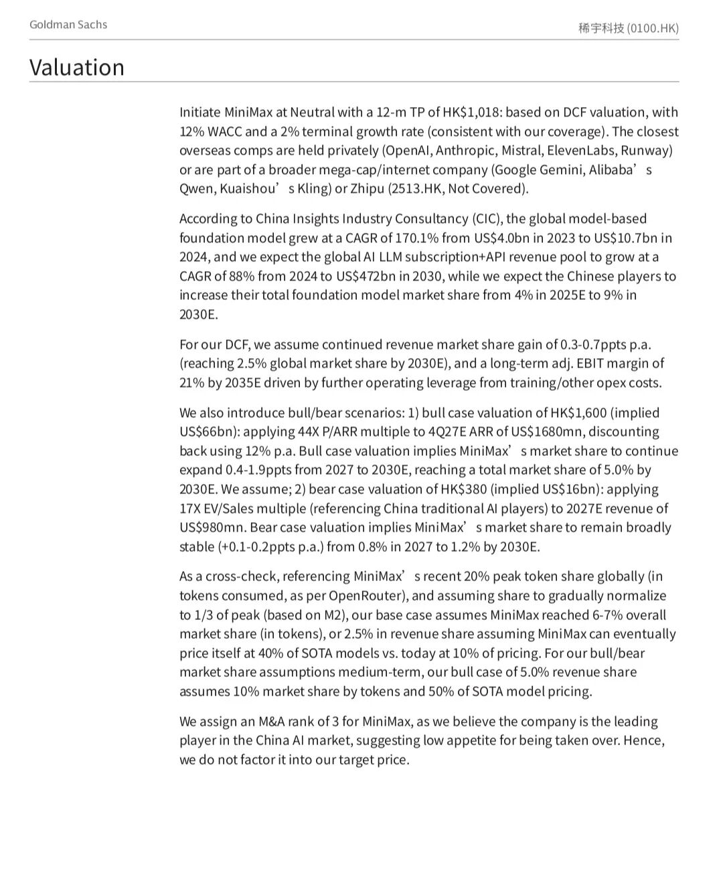
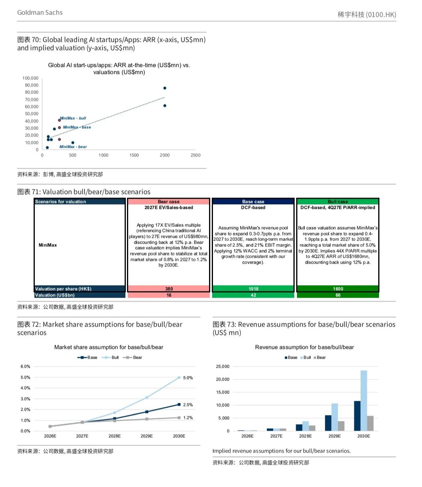
1. 模型框架：采用「详细预测期+永续增长期」的标准两阶段DCF，详细预测期覆盖至2030年，2031-2035年为稳定增长期，最终通过戈登增长模型（Gordon Growth Model） 计算2035年末的终值。
2. 核心参数：
- 折现率：12%的WACC（三种情景折现率均为12％，大模型估值可参考，后文详细介绍折现率搭建方法）；
- 永续增长率：2%，大模型估值可参考；
- 折现率和永续增长率确定之后，通过戈登增长模型，计算出2035年末的终值（Terminal Value）
- 终值（Terminal Value）＝2035年FCF自由现金流×（1+永续增长率）/（折现率-永续增长率）
- 汇率假设：USD/CNY=7.15，USD/HKD=7.77。
3. 核心经营假设：采取自上而下预测，即市场空间×市场占有率
- 市占率：2026-2030年，Minimax在全球AI大模型订阅+API收入池的市占率每年提升0.3-0.7个百分点，2030年达到2.5%；
- 盈利拐点：2029年实现经营利润与自由现金流转正，2035年调整后EBIT利润率达到21%；
- 现金流：2030年自由现金流（FCF）7.94亿美元，2035年FCF利润率提升至13%。
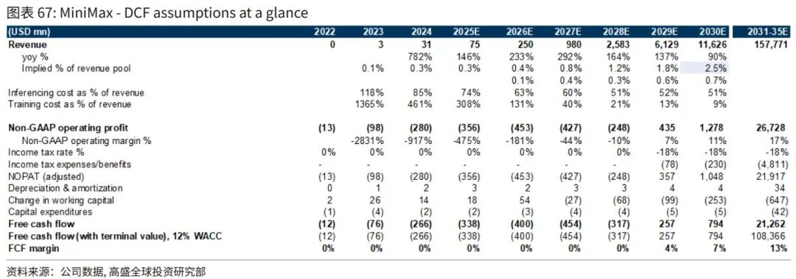
4. 估值计算结果：企业价值转换为股权价值，并除以流通股数
- 把2022-2035年每年的自由现金流、2035年末的终值，全部按12%的WACC折现至2026年，得到贴现后的企业价值410.67亿美元，注意此时是企业价值（Enterprise Value）；
- 加计2026年净现金7.66亿美元，得到股权估值（Equity Value）418.33亿美元，折合3262.95亿港元；
- 结合3.21亿股总股本，最终对应每股目标价，即股权价值/总股本。
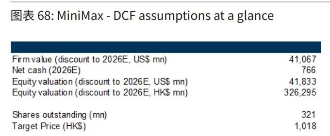
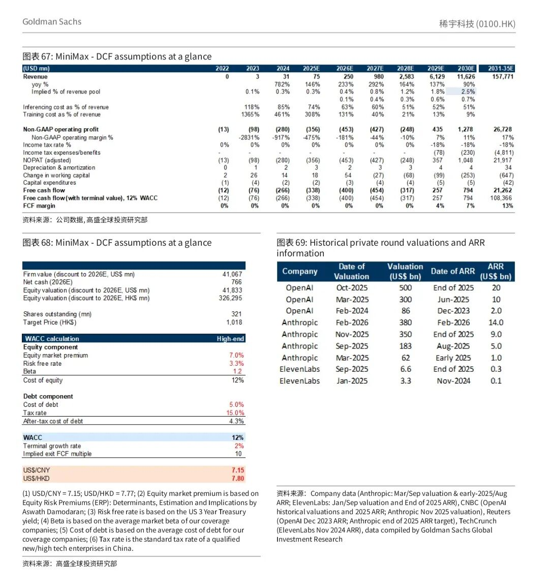
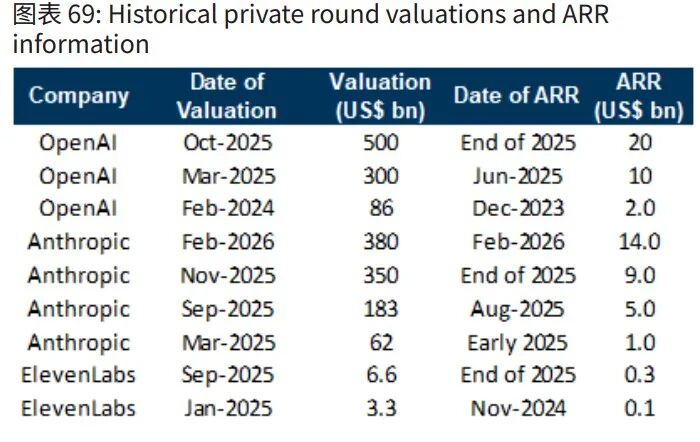
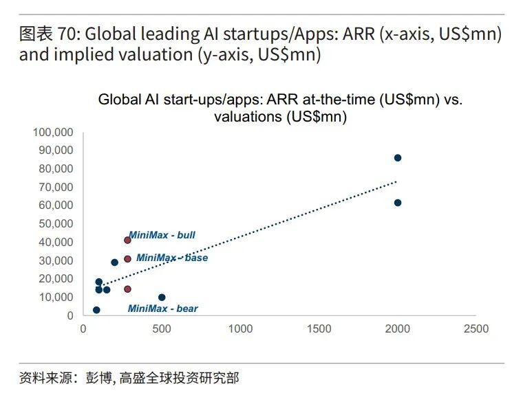
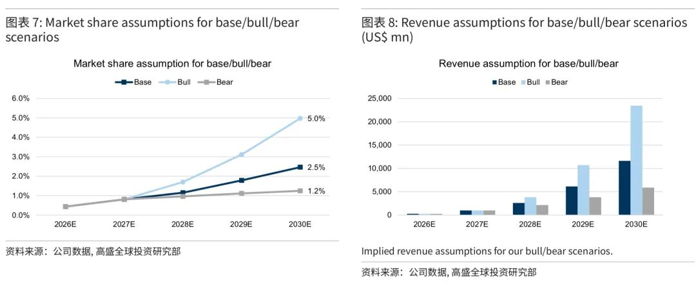
四、悲观情景（Bear Case）：EV/Sales倍数法+1年期折现
与乐观情景逻辑一致，为纯相对估值法+折现，无DCF模型，研报原文逻辑：applying 17X EV/Sales multiple (referencing China traditional AI players) to 27E revenue of US$980mn, discounting back at 12% p.a.，具体细节：
1. 核心参数：
- 估值倍数：选取17倍EV/Sales（企业价值/销售额），对标中国传统AI上市公司的平均估值水平；
- 锚定标的：2027年MiniMax的营收9.8亿美元；
- 折现率：12%年化折现率，仅折现1年。
2. 估值计算过程：
- 第一步：计算2027年末的远期企业价值：17倍 × 9.8亿美元 = 166.6亿美元；
- 第二步：按12%年化折现率折现1年，四舍五入后得到当前估值160亿美元；
3. 配套经营假设：
假设行业竞争加剧导致市占率增长基本停滞，2027-2030年全球收入市占率仅每年微增0.1-0.2个百分点，2030年仅提升至1.2%。
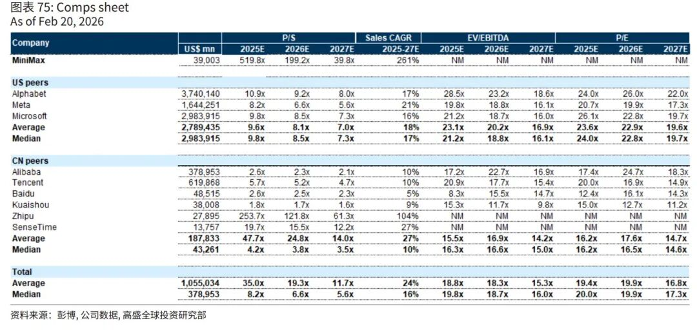
五、折现率选取口径：这里高盛给出了相对详细的参数估计口径，可参考
1. 标的有息负债趋近于0，账面净现金，采用了WACC计算，但实际数字接近于股权资本成本（CoE）；
2. CoE基于CAPM资本资产定价模型测算，无风险利率Rf选取3.3%、股权风险溢价ERP选取7.0％。这里高盛给出了口径，无风险利率选取美国3年期国债，ERP参考NYU达摩教授数据库；
3. COD选取Coverage公司平均数，Tax Rate选取高新企业15％。注意债务资本成本需要取税后；
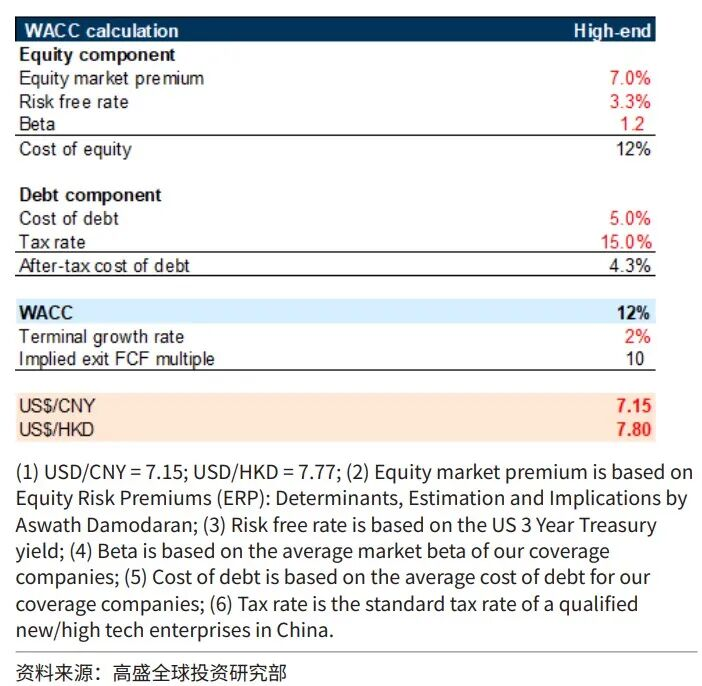
六、Minimax利润表预测概览：
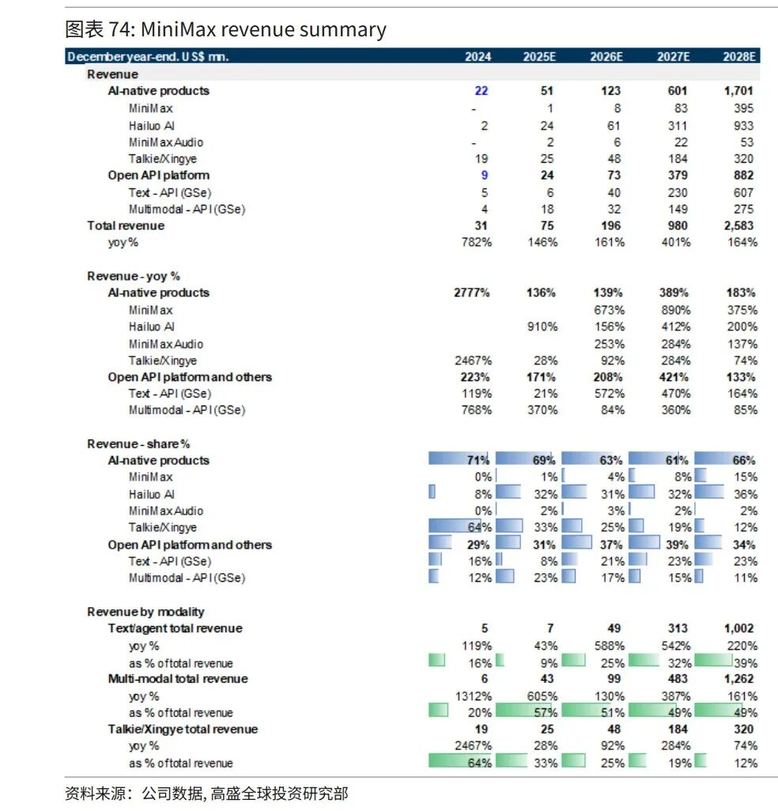
七、核心风险与行业关键议题
（一）上行风险/超预期因素
1. 模型表现超预期：基础文本模型性能优于竞品，快速扩大用户与企业客户基础，多模态技术突破打开新应用场景；
2. 盈利拐点提前到来：推理/训练成本优化超预期，商业化渠道变现效率提升，加速实现正向现金流与净利润；
3. 商业化能力超预期：C端应用、API服务、AI智能体等渠道的用户渗透、付费转化与ARPU超预期增长。
（二）下行风险
1. 行业竞争加剧：全球大模型行业技术迭代快，无法跟上头部厂商的模型升级节奏将导致竞争力下滑；
2. 盈利能见度不足：高研发与算力投入导致持续现金消耗，若商业化不及预期，将面临持续亏损与融资需求；
3. IP与内容合规风险：生成式AI面临第三方知识产权侵权诉讼、内容合规监管风险，可能带来声誉损失与法律成本；
4. 地缘政治风险：中美科技竞赛加剧背景下，美国对中国AI模型的使用限制、芯片供应链限制，将影响公司市场拓展与模型训练。
（三）核心市场争议点
高盛在报告中回应了市场三大核心争议：
1. AI模型行业终局格局与公司竞争优势：认为行业仍处于早期阶段，独立AI厂商仍有突围机会，MiniMax的全模态原生布局、全球化能力、成本效率是核心护城河，相较于互联网巨头具备更高的组织与决策效率；
2. 收入与盈利前景：API业务已实现69%的高毛利率，多模态API是核心盈利支撑，随着规模效应释放，整体毛利率将持续提升，2029年实现盈利具备可行性；
3. Talkie/星野的投入强度：该业务当前低毛利拖累了公司整体盈利，未来公司将降低其资源投入，AI原生产品毛利率将向API平台逐步收敛。